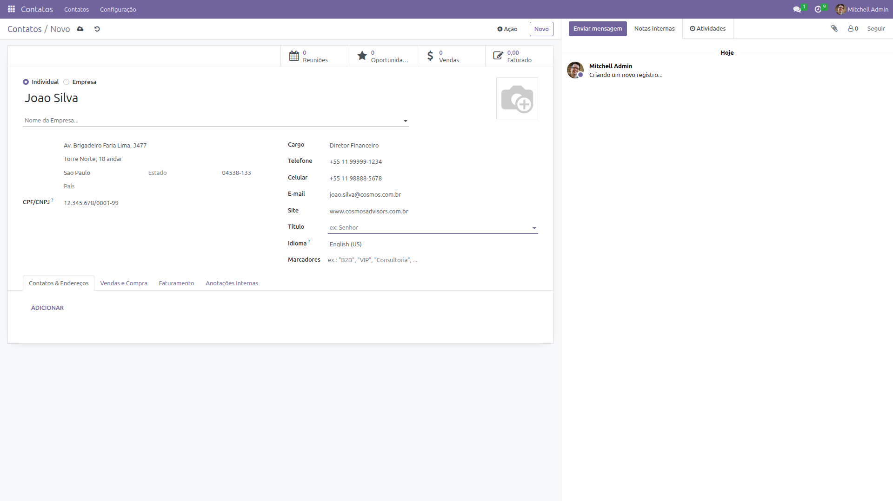
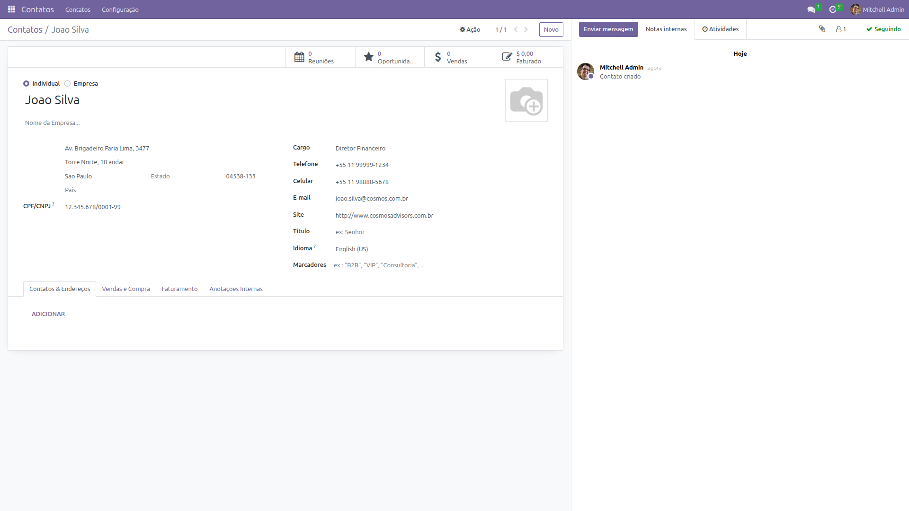

Visão Geral
Por que cadastrar Contatos
Um Contato no Odoo não é apenas um nome e telefone. É um registro completo que alimenta outros módulos: CRM, Faturamento, Helpdesk, Vendas.
Contato bem cadastrado = menos retrabalho em todos os módulos.
| Módulo | Como usa o contato |
|---|---|
| Faturamento | Para gerar faturas |
| CRM | Para vincular leads |
| Helpdesk | Para associar tickets |
| Vendas | Para gerar pedidos |
Passo a Passo
Como cadastrar um contato
Acessar Contatos
No menu superior, clique em Contatos. A grade mostra os contatos já cadastrados.
Criar Novo Contato
Clique em NOVO. Primeiro, selecione o tipo:
| Tipo | Quando usar |
|---|---|
| Pessoa Física | Cliente individual, funcionário |
| Pessoa Jurídica | Empresa, organização |
Preencher Dados Principais
Preencha as informações de identificação:
| Campo | Importância | Exemplo |
|---|---|---|
| Nome | Identificação | Cosmos Advisors |
| Empresa | Vínculo | Cosmos Advisors Ltda |
| Cargo | Função | Diretor Financeiro |
| Comunicação | contato@cosmos.com.br | |
| Telefone | Contato direto | +55 11 99999-1234 |
Preencher Endereço
O endereço é obrigatório para notas fiscais (NFe):

Preencher Dados Fiscais
Para Pessoa Jurídica, o CNPJ é essencial:
| Campo | Descrição |
|---|---|
| CNPJ/CPF | Documento fiscal (obrigatório para faturamento) |
| Inscrição Estadual | IE (se aplicável) |
Sem CNPJ, não é possível emitir nota fiscal para a empresa.
Salvar
Clique em Salvar ou pressione Ctrl+S.
O contato fica disponível em todos os módulos do Odoo.

✨ Boas Práticas
- Não duplique contatos — busque antes de criar novo
- Preencha o CNPJ — obrigatório para faturamento
- Use email corporativo — facilita identificação
- Atualize dados quando houver mudança
- Vincule a empresa usando o campo "Empresa"
- Adicione foto para identificação visual